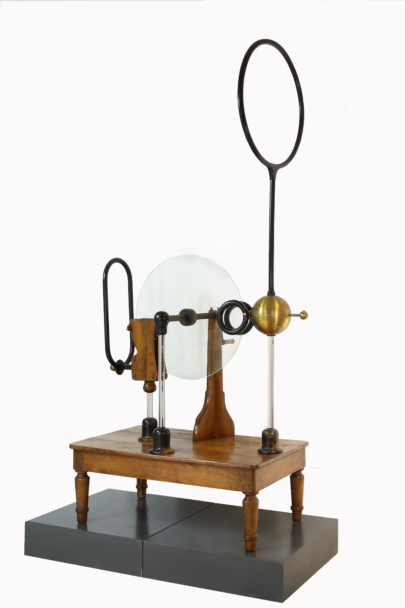

Macchina di Winter
Scuola di provenienza: Istituto Agrario "F. De Sanctis", Avellino
Settore: Elettrostatica
Costruttori: Sconosciuto
Materiali: Legno, vetro e ottone
Accessori: Nessuno
Stato di conservazione: Buono, ma con tarme e crepe nel legno, in origine erano spaccati i due archi condensatori
Descrizione: La macchina di Winter costituisce un esempio di generatore elettrostatico a disco del tipo diffuso verso la metà del XIX secolo dal signor Winter di Vienna. L’esemplare esposto dovrebbe essere dell’ultimo quarto dell’800. Quando mediante la manovella viene posto in rotazione il disco di vetro, a causa dello strofinio con i cuscinetti si carica positivamente, mentre i cuscinetti si caricano negativamente. Le cariche positive del disco - mentre che questo continua a girare - arrivano nelle vicinanze delle punte che elettrizzano per induzione negativamente essendo vicine al disco carico positivamente, mentre il conduttore sferico, più lontano, si carica positivamente. Le cariche negative delle punte,intanto, neutralizzano l’elettricità del disco,che, continuando a girare, si elettrizzerà nuovamente passando tra i cuscinetti e così via. In questo modo il conduttore sferico rimane carico positivamente; il grande anello di legno dovrebbe avere la funzione di aumentare la capacità del conduttore positivo. Dal lato diametralmente opposto,invece, la sfera metallica che comunica con i cuscinetti serve a raccogliere l’elettricità negativa; il tubo oblungo di legno dovrebbe avere la funzione di aumentare la capacità del conduttore negativo. La macchina di Winter consentiva in questo modo di ottenere elettricità positiva e negativa; essa era utilizzata per varie esperienze ed aveva inoltre applicazioni in campo medico.